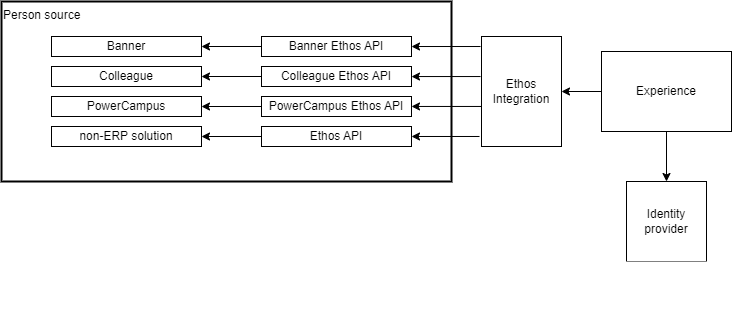
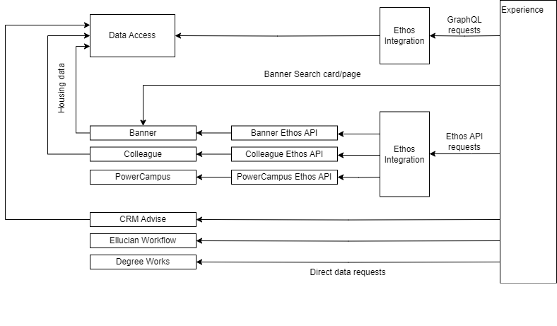
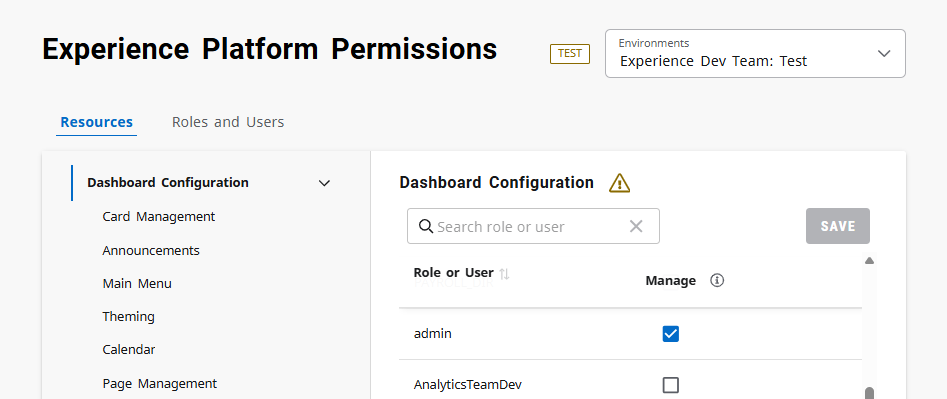
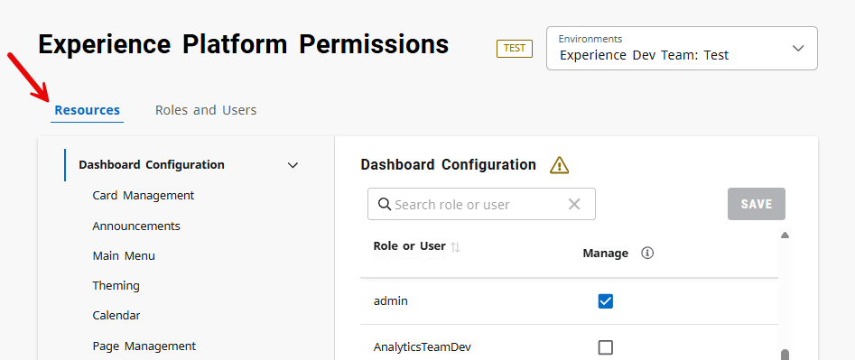

Configure Ellucian Experience
High-level procedure for implementing Experience
These are the high-level steps for a basic implementation of Ellucian Experience.
Find Experience Setup within the Customer Center
To configure Ellucian Experience, you need access to the Experience Setup (Test) and Experience Setup applications. You will see Experience Setup on the Tools tab in the Customer Center if you have enabled Ethos. If you do not see Experience Setup or Integration, request access to both through csenablement@ellucian.com.
- You must have access to the Ellucian Customer Center.
- Configure Ethos Integration to support Banner or Colleague transactions.
- VIDEO - Getting Started with Experience
- DOC - Ellucian Experience Documentation
Configure single sign-on within Experience Setup
To grant users access to Ellucian Experience, you need to configure single sign-on within Experience Setup. To accomplish this step, you must have access to your institution's identity provider.
- Your institution must possess a SAML 2.0 compliant identity provider.
- Your institution must open your firewall for the Experience IPs.
- Define identity provider claims for ERP ID, Roles, and User ID.
-
VIDEO - Configure Single Sign-On
-
DOC - Set up Ellucian Experience with an identity provider
Connect Experience to Ethos Integration
Experience uses Ellucian Ethos for integration with other solutions. This integration allows cards to display relevant data from various source systems. Your institution must have Ethos Integration operational before connecting Ellucian Experience to Ethos.
- Configure Ethos Integration to support Banner or Colleague transactions.
- You must possess the API proxy user credentials from Banner or Colleague for Ethos Integration setup.
Contact your Customer Success Manager for additional options to get started with Ethos.
-
DOC - Connect your ERP to Ethos Integration
-
DOC - Create an application in Ethos Integration for Ellucian Experience
Specify Roles and Permissions
All users must possess a role before gaining access to Experience. Roles are defined within Experience Setup and originate from your identity provider or Ethos. Permissions are assigned from Experience Setup and allow users to configure dashboard content.
- Experience must be listed as a service provider within your identity provider.
- Define a roles claim within the identity provider.
- Configure your ERP to define Ethos roles for each person record.
-
DOC - Set up roles for Ellucian Experience
-
DOC - About Experience application permissions
Access the Experience Dashboard
Following the single sign-on and Ethos configuration steps, you can now access the Experience dashboard and become familiar with the application. Within the dashboard, you can create cards and announcements, update your theme, and add resources to the main menu.
- Configure single sign-on.
- Connect Ethos Integration to Experience.
- Define roles and grant permissions.
-
DOC - Apply a custom theme to Ellucian Experience
-
DOC - Add category and resource links to the Experience main menu
-
DOC - Create a card from a template
About Experience configuration
Experience architecture
A basic implementation of Experience requires Ethos Integration, an Ellucian ERP or other Ellucian source of person data, and an identity provider. Integration with other Ellucian solutions supports surfacing data from those solutions within Experience.
The diagrams below provide information about the basic configuration of Experience with other applications.
Configuration for user access to Experience
To support user access to Experience, every Experience implementation requires, at a minimum, a SAML 2.0-compliant identity provider and an Ellucian ERP or other Ellucian solution that provides person information.

Data requests from Experience to ERPs and other Ellucian solutions
Experience gets data from ERPs and other Ellucian solutions to display in Experience cards and other content. Experience gets some data through Ethos API requests through Ethos Integration, some through GraphQL requests to Data Access, and some through direct requests to the Ellucian solution. The diagram below shows examples of the data requests.

Experience prerequisites
To implement Ellucian Experience, you need to set up other Ellucian solutions and third-party solutions that provide Experience content or support the integration of those solutions with Experience.
| Prerequisite | Comments | Reference |
|---|---|---|
| Identity provider | Ellucian Experience requires a SAML 2.0-compliant identity provider for authentication and authorization for Ellucian Experience users. Ellucian Experience has been tested with AD FS, Entra ID, Ellucian Ethos Identity, and Shibboleth. | Set up Ellucian Experience with an identity provider |
| Person source | Experience must be connected to an Ellucian ERP (Banner, Colleague, or PowerCampus) or other Ellucian solution (such as CRM Advance) that provides person information using the Ethos persons data model. |
Experience integration with Ellucian solutions |
| Ethos Integration | Experience connects to an integrated solution (an ERP or other source of person information) through Ethos Integration, using Ethos APIs specific to that solution. | Connect the integrated solution to Ethos Integration |
| Ellucian ERP | In most Experience implementations, Experience displays content from an Ellucian ERP (Banner, Colleague, or PowerCampus). Experience connects to the ERP through Ethos Integration, using Ethos APIs specific to that ERP. | See Connect the integrated solution to Ethos Integration for the minimum Ethos API versions for each ERP. |
| Data Access (optional) | Some Experience content uses GraphQL requests to Data Access to get the required data. For example:
|
Set up GraphQL requests to Data Access |
Experience integration with Ellucian solutions
Ellucian Experience is always connected through Ethos Integration with an Ellucian ERP or other Ellucian solution. At a minimum, you must integrate Experience with at least one Ellucian solution that provides person information using the Ethos persons data model.
Experience with an ERP
Many Ellucian Experience implementations integrate Experience with an Ellucian ERP - Banner, Colleague, or PowerCampus. These implementations provide Experience/ERP integration features such as academic details on the Profile page, the use of Ethos roles, and ERP holds displayed as notifications in Experience.
Experience without an ERP
- Integration with Quercus provides administrators with access to the Data Connect Packages card, which they use to access Data Connect integrations such as the DfE and HESA Data Futures integrations.Note: Although Quercus is an ERP, the Quercus integration with Experience is not intended to provide the Experience/ERP integration features.
- Integration with CRM Engage provides development officers with access to the Constituents card and the Contact Reports card.
Non-ERP implementations require performing only some of the configuration steps in this Experience documentation.
Experience integration with multiple person sources
You can integrate Experience with multiple sources of person information, such as both Banner and CRM Advance. For these implementations, you set up your identity provider with person claims for both solutions. Experience searches both solutions, in the order you specify, when searching for a particular person. Each person source must be configured with Ellucian Person Manager.
Experience instances and Ethos environments
An Ellucian Experience site is connected to an Ellucian Ethos environment for retrieval of data from your ERP through Ethos Integration, and for other integrations.
Overview
- Experience: Each release of Experience is initially released to test instances and then, a few days later, to production instances. During the period between those releases, Test is one release ahead of Production. Except for that brief period, Test and Production have the same features.
- Ethos: The basic configuration for each customer is an Ethos tenant with two environments, Test and Production. You might have also obtained additional environments, such as a Development or Training environment.
In a multi-institution implementation, there are additional Ethos tenants for each institution within the system, as described in Multi-institution Experience.
Experience Production is always connected to Ethos Production.
Experience Test can be connected to Ethos Test or to any other non-Production Ethos environment you have licensed from Ellucian.
Select your Experience/Ethos combination in Experience Setup
- In the Ellucian Customer Center, click Tools, and then select the desired Experience Setup instance:
- Click Experience Setup (Test) to access the Test instance of Experience Setup.
- Click Experience Setup to access the Production instance of Experience Setup.
- (If applicable) In Experience Setup, in the Environments drop-down, select the desired Ethos environment. The option to select an environment is available only if multiple Ethos environments are associated with this Experience Setup instance. For example:
- This is a multi-institution implementation of Experience.
- You accessed the Test instance of Experience Setup, and you have licensed Ethos non-Production environments in addition to the basic Test environment. For example, you might have licensed a Development environment.
Identify your current Experience/Ethos combination in Experience Setup
- experiencesetup-test.elluciancloud.com indicates the Test instance of Experience Setup.
- experiencesetup.elluciancloud.com indicates the Production instance of Experience Setup.
The Ethos environment (for example, Test or Production) is identified next to the Environments drop-down.
Identify your current Experience/Ethos combination in Experience
In the Ellucian Experience site (the dashboard), the URL in the address bar identifies both the Experience instance and the Ethos environment.
- experience-test.elluciancloud.com indicates the Test instance of Experience.
- experience.elluciancloud.com indicates the Production instance of Experience.
The Ethos environment is identified by the next part of the URL, which is the alias assigned by Ellucian to that Ethos environment. To determine the alias that corresponds to an Ethos environment, go to Ethos Integration and then click the gear icon  in the header bar.
in the header bar.
Multi-institution Experience
Multi-institution systems that share an ERP and use the same identity provider instance can use the optimized multi-institution features of Ellucian Experience.
The multi-institution feature set of Experience is available with additional licensing for Experience Premium customers. See your Ellucian Sales team contact for details.
Benefits of the multi-institution feature set
- Centralized system administration from a single Experience Setup site.
- The ability to define identity provider setup for all institutions at the system level. No institution-specific identity provider setup is required.
- The ability to define roles and permissions at the system level, available when configuring content at all institutions; or at the institution level, available only for that institution.
Dashboards
- A dashboard for each institution in the system.
- A dashboard at the system level. For example, users who manage system-wide functions (such as payroll) through Experience might start from a payroll card on the system-level dashboard.
Users who are affiliated with multiple institutions within your system need access to multiple dashboards. Those users can easily view another dashboard by selecting it from a drop-down list under the user profile avatar, which opens the new dashboard in a separate browser tab. The user can simultaneously view the dashboards for multiple institutions in separate browser tabs or windows.
Ethos tenants
- My College: Test
- My College: Production
- My College: Test
- My College: Production
- My College Main: Test
- My College Main: Production
- My College North: Test
- My College North: Production
- My College South: Test
- My College South: Production
As you configure Ellucian Experience, you select the correct Ethos tenant for each procedure as shown in the table below. The documentation guides you in selecting the appropriate tenant for each procedure.
| Type of configuration | Description |
|---|---|
| Ethos Integration | All setup in Ethos Integration, such as creating Ethos applications, is done within a single tenant. Typically, you would use the system tenant for this configuration. |
| Identity provider | Identity provider setup in Experience Setup is done within the system tenant. If you navigate within Experience Setup to one of the institution tenants, you can view, but not modify, the identity provider setup defined at the system level. |
| Roles and permissions | You can define roles and permissions from either the system tenant or the institution tenant. Roles and permissions defined from the system tenant apply at the system level and also apply to all institutions in the system. |
| Dashboard setup | Dashboard setup within the Configuration area of Ellucian Experience is done from the specific institution-level or system-level Experience site. |
Administrators
- Basic configuration is performed in Ellucian Experience Setup. Access to Experience Setup requires that Ellucian provide people in your organization with access to a tenant. You could choose, for example, to provide some administrators access to all tenants at the system and institution levels, and other administrators access only to individual institution tenants. See Request access to child tenants for information about how to request that Ellucian set up access to particular tenants.
- Content configuration is performed from the Configuration area of the Experience dashboard. You will grant content administrators access to the Configuration area of the Experience dashboard from Experience Setup, as described in Grant Experience dashboard configuration permissions.
Documentation
The Experience configuration documentation includes procedures for setting up Experience with Banner Multi-Entity Processing (MEP) to take advantage of the multi-institution features of Experience.
Request access to child tenants
Use the instructions below to request that Ellucian provide administrative access to the institution-level tenants in an Experience multi-institution implementation. These instructions assume that administrators already have access to the system-level tenant.
Use the appropriate version below depending on whether you want access to all or only some child tenants.
For a description of tenants in an Experience multi-institution configuration, see Multi-institution Experience.
Request access to all child tenants in your system
From the Ellucian Customer Center, create a case with the information listed below.
| Field on the Create a Case form | Entry |
|---|---|
| Product Line | Customer Success |
| Product Name | Customer Center |
| Short Description | Admin Access for Experience Setup (multi-institution) |
| Description | Please provide me with access to production and test tenant environments for all child institutions so that I can see all institutions within Experience Setup. Parent Organization Name: <Enter the name of your system> Point-of contact: <Enter the name and organization role of the contact> |
Request access to only some child tenants in your system
From the Ellucian Customer Center, create a case with the information listed below.
| Field on the Create a Case form | Entry |
|---|---|
| Product Line | Customer Success |
| Product Name | Customer Center |
| Short Description | Admin Access for Experience Setup (multi-institution) |
| Description | Please provide me with access to production and test tenant environments for the specific institutions listed below so that I can see a specific set of institutions within Experience Setup. Parent Organization Name: <Enter the name of your system> Child Organization Names: <Enter the list of institutions within your system for which you want tenant environments.> Point-of contact: <Enter the name and organization role of the contact> |
Experience domains and IP addresses
Some procedures require that you specify the domain or IP addresses for Ellucian Experience in the Ellucian cloud. Use the domain and IP addresses for your region.
| Region | Domain | IP Addresses |
|---|---|---|
| U.S. | Experience dashboard:
Experience Setup:
|
Test:
Production:
|
| Canada | Experience dashboard:
Experience Setup:
|
Test:
Production:
|
| Europe | Experience dashboard:
Experience Setup:
|
Test:
Production:
|
| Asia-Pacific | Experience dashboard:
Experience Setup:
|
Test:
Production:
|
Connect the integrated solution to Ethos Integration
Ellucian Experience is connected through Ethos Integration with an integrated solution: an ERP (Banner, Colleague, or PowerCampus) or other Ellucian solution.
See the table below for links to the procedures for setting up the integrated solutions in Ethos Integration.
| Integrated solution | Where to find the procedures |
|---|---|
| Banner | See Connect Banner to Ethos Integration. Experience requires Banner Ethos API 9.25 or later to implement most Experience features. Some recently-released features require a later version:
|
| Colleague | See Connect Colleague to Ethos Integration. Experience requires Colleague Web API 2.1.1 or later to implement most Experience features. Some recently-released features require a later version:
|
| PowerCampus | See Connect PowerCampus to Ethos Integration. For the versions of the PowerCampus Ethos API that are certified with Ellucian Experience, see the PowerCampus Compatibility Report, available as an attachment from the PowerCampus Documentation page. |
| CRM Advance with CRM Engage | See the CRM Engage setup documentation for procedures for setting up CRM Engage with Experience, including Ethos setup. |
| Quercus | See Connect Quercus to Ethos and Experience for procedures for setting up Quercus with Experience, including Ethos setup. |
Connect Ellucian Experience to Ethos Integration
Set up Ellucian Experience with Ellucian Ethos Integration to support messaging between Ellucian Experience and other applications.
For a Banner MEP implementation, use the procedures in Connect Ellucian Experience to Ethos Integration (Banner MEP) instead.
Create a user for proxy API requests
In the ERP or other solution you are integrating with Ellucian Experience, create a user to support proxy API requests from Experience.
About this task
Procedure
Banner resources for API requests from Experience
Colleague resources for API requests from Experience
Ellucian Experience needs access to specific Ethos resources to support API requests to Colleague through Ethos Integration.
The table below lists the resources along with the Colleague permissions that provide access to those resources.
The permissions listed in the Colleague Permission column come from the API Catalog. To determine the required permission for any API, go to the home page of the Ellucian Documentation site, click , and then search for the desired API. On the page for the API, expand the GET method. The permission is displayed as the value of the x-method-permissions field at the bottom of the expanded section.
Note the following:
| Colleague permission considerations | Example |
|---|---|
| Some resources do not require that permissions be assigned in Colleague to support READ access. If a resource does not have permissions listed in the Colleague Permission column, then you do not need to assign permissions for that resource. | The Colleague proxy user can read academic-catalogs information without having permissions assigned. |
| If a resource has multiple permissions for different access levels, the Colleague Permission column includes only the permission required for READ access. | The addresses resource requires the VIEW.ADDRESS permission for READ access, and the UPDATE.ADDRESS permission for READ/UPDATE access. The Colleague Permission column includes only the VIEW.ADDRESS permission. |
| If a resource requires permissions for CREATE/UPDATE, but not for READ, the Colleague Permission column says that no permissions are required. | The courses resource has only the CREATE.UPDATE.COURSE permission for CREATE/UPDATE access. The Colleague Permission column says that no permissions are required, because Experience requires only READ access. |
| Resource | Required Permissions | Colleague Permission |
|---|---|---|
| academic-catalogs | Read | |
| academic-credentials | Read | |
| academic-disciplines | Read | |
| academic-levels | Read | |
| academic-periods | Read | |
| academic-programs | Read | |
| addresses | Read | VIEW.ADDRESS |
| advisor-types | Read | |
| buildings | Read | |
| courses | Read | |
| course-title-types | Read | |
| educational-institution-units | Read | |
| gender-identities | Read | |
| grade-definitions | Read | |
| instructional-events | Read | |
| personal-pronouns | Read | |
| person-hold-types | Read | |
| person-holds | Read | VIEW.PERSON.HOLD |
| persons | Read | VIEW.ANY.PERSON |
| rooms | Read | |
| sections | Read | |
| section-grade-types | Read | |
| section-instructors | Read | VIEW.SECTION.INSTRUCTORS |
| section-registration-information1 | Read | |
| section-registrations | Read | VIEW.REGISTRATIONS |
| section-schedule-information1 | Read | |
| section-title-types | Read | |
| sites | Read | |
| student-academic-programs | Read | VIEW.STUDENT.ACADEMIC.PROGRAM |
| student-advisor-relationships | Read | VIEW.STU.ADV.RELATIONSHIPS |
| student-transcript-grades | Read | VIEW.STUDENT.TRANSCRIPT.GRADES |
| student-unverified-grades | Read | VIEW.STUDENT.UNVERIFIED.GRADES |
| students | Read | VIEW.STUDENT.INFORMATION |
| subjects | Read | |
| user-identity-profiles | Read | VIEW.ANY.PERSON |
section-registration-information and section-schedule-information resources support improved performance, and display of the instructional method, in the Classes and Class Schedule cards. The required versions of those resources are available with Colleague Web API 2.7 or later.Create an application in Ethos Integration for Ellucian Experience
The application record contains basic information about Ellucian Experience and how it interacts with other applications through Ethos Integration.
Before you begin
About this task
- For CRM Engage, see the procedure for creating an application for Experience to support CRM Engage.
- For Quercus, see the procedure for creating an application for Experience to support Quercus.
Procedure
-
On the Ethos Integration header bar, click the gear icon and then select the Ethos environment where you want to perform this procedure.
(Optional) Restrict the Experience API key
An API key was automatically generated when you created the Ethos application for Ellucian Experience. You can optionally specify IP address restrictions on that API key so that Ethos requests from Experience must come from only those IP addresses.
Use the procedure in Add a restricted API key to restrict the Experience API key. Enter a comma-delimited list of IP addresses in CIDR notation. Use the table below to determine the appropriate IP addresses for your region and Experience environment (Test or Production). Note that you must also enter the IP addresses for the Classes extension, which is used for the Classes and Class Schedule cards.
Example entry for the Experience production environment in the U.S. region, with both the Experience and Classes extension addresses:
3.213.247.37/32,3.221.108.177/32,23.23.100.94/32,44.217.150.118/32,52.20.169.6,3.232.111.52
| Region | IP Addresses in CIDR notation |
|---|---|
| U.S. | Experience Test:
Experience Production:
Classes extension (same IP addresses for both Test and Production):
|
| Canada | Test:
Production:
Classes extension (same IP addresses for both Test and Production):
|
| Europe | Test:
Production:
Classes extension (same IP addresses for both Test and Production):
|
| Asia-Pacific | Test:
Production:
Classes extension (same IP addresses for both Test and Production):
|
Add credentials to the Experience application
In the Ethos application for Experience, add the credentials that support proxy API requests to your ERP or other integrated solution.
About this task
Procedure
-
On the Ethos Integration header bar, click the gear icon and then select the Ethos environment where you want to perform this procedure.
Set up GraphQL requests to Data Access
The Ellucian Experience content listed below retrieves Banner or Colleague data by making GraphQL requests to Ellucian Ethos Data Access. Perform the procedures in this section if you are using any of that content.
- The Housing Request card
- Any card you created using the Ellucian Experience SDK, and that you set up to retrieve data from Data Access using GraphQL requests
Set up your ERP with Data Access
If you are using a card that makes GraphQL requests to Ellucian Ethos Data Access, you need to set up the loading of Colleague or Banner data into Data Access. See Configure Data Access.
Add GraphQL resources to Ellucian Experience
In Ethos Integration, set up Ellucian Experience to make GraphQL requests to Data Access.
Procedure
-
On the Ethos Integration header bar, click the gear icon and then select the Ethos environment where you want to perform this procedure.
Resources for which Ellucian Experience makes GraphQL requests
Ellucian Experience makes GraphQL requests to Data Access for the resources listed here. Add the resources required to support the cards you are using.
| Experience card | Required GraphQL resources |
|---|---|
| Housing Request | academic-periods buildings housing-assignments housing-requests persons rooms |
Enter the API key in Ellucian Experience
Ellucian Experience must include its Ethos Integration API key in all requests it sends to Ethos Integration. An API key was generated when you created the application in Ethos Integration for Ellucian Experience. In this procedure, you will copy the API key from Ethos Integration and then enter it in Ellucian Experience Setup.
Procedure
-
In Ethos Integration, copy the API key:
-
On the Ethos Integration header bar, click the gear icon and then select the Ethos environment (for example, Test or Production) that you are connecting to Ellucian Experience.
- On the Ethos Integration header bar, click Applications.
- On the Applications page, click the application for Ellucian Experience.
- On the Application Overview page, click the API Keys tab.
-
On the API Keys page, locate the row for the API key and click the Copy
 icon.
icon.
-
On the Ethos Integration header bar, click the gear
Connect Ellucian Experience to Ethos Integration (Banner MEP)
Use these procedures if you are setting up Ellucian Experience with Ellucian Ethos Integration in a Banner MEP environment.
If this is not a Banner MEP environment, use the procedures in Connect Ellucian Experience to Ethos Integration instead.
Create a user for proxy API requests (Banner MEP)
Create a user in Banner to support API requests from Ellucian Experience.
About this task
Ellucian Experience makes API requests to Banner through Ethos Integration. Each request includes the credentials for a user with permissions to access the data. You will enter those user credentials in the Add Application wizard when you create the Ethos applications for Ellucian Experience.
Procedure
Banner resources for API requests from Experience
Create the applications in Ethos Integration for Ellucian Experience (Banner MEP)
The application record contains basic information about Ellucian Experience and how it interacts with Banner through Ethos Integration.
Before you begin
About this task
- Ellucian Experience System-wide
- Ellucian Experience Main
- Ellucian Experience North
- Ellucian Experience South
Procedure
-
On the Ethos Integration header bar, click the gear icon and then select the system-level Ethos tenant and the desired Ethos environment (such as Test or Production).
Although you will create Ethos applications for each institution, you will create all applications within the system level Ethos tenant in Ethos Integration, not within the institution-level Ethos tenants.
(Optional) Restrict the Experience API key
An API key was automatically generated when you created the Ethos application for Ellucian Experience. You can optionally specify IP address restrictions on that API key so that Ethos requests from Experience must come from only those IP addresses.
Use the procedure in Add a restricted API key to restrict the Experience API key. Enter a comma-delimited list of IP addresses in CIDR notation. Use the table below to determine the appropriate IP addresses for your region and Experience environment (Test or Production). Note that you must also enter the IP addresses for the Classes extension, which is used for the Classes and Class Schedule cards.
Example entry for the Experience production environment in the U.S. region, with both the Experience and Classes extension addresses:
3.213.247.37/32,3.221.108.177/32,23.23.100.94/32,44.217.150.118/32,52.20.169.6,3.232.111.52
| Region | IP Addresses in CIDR notation |
|---|---|
| U.S. | Experience Test:
Experience Production:
Classes extension (same IP addresses for both Test and Production):
|
| Canada | Test:
Production:
Classes extension (same IP addresses for both Test and Production):
|
| Europe | Test:
Production:
Classes extension (same IP addresses for both Test and Production):
|
| Asia-Pacific | Test:
Production:
Classes extension (same IP addresses for both Test and Production):
|
Add credentials to the Experience application (Banner MEP)
In the Ethos application for Experience, add the credentials that support proxy API requests to Banner.
About this task
Procedure
-
On the Ethos Integration header bar, click the gear icon and then select the Ethos environment where you want to perform this procedure.
Enter the API keys in Ellucian Experience (Banner MEP)
Ellucian Experience must include its Ethos Integration API key in all requests it sends to Ethos Integration. An API key was generated when you created each application in Ethos Integration for Ellucian Experience. In this procedure, you will copy the API keys from Ethos Integration and then enter them in Ellucian Experience Setup.
About this task
Procedure
-
In Ethos Integration, copy the API key:
-
On the Ethos Integration header bar, click the gear icon and then select the system-level Ethos tenant and the desired Ethos environment (such as Test or Production).
You will copy all API keys from the system-level Ethos tenant in Ethos Integration, not from the institution-level Ethos tenants.
-
On the API Keys page, locate the row for the API key and click the Copy icon.
Keep this browser window open. You will return here to copy the API keys for other Ethos applications.
-
On the Ethos Integration header bar, click the gear
Whitelisting to support Experience
Experience needs to be able to communicate through your firewall to retrieve data from your on-premises systems and to display content on the dashboard.
- Experience IP Addresses - Experience must have access through your firewall to systems installed at your institution from which Experience gets data directly rather than through Ethos Integration. Your firewall rules must allow for inbound requests from the Ellucian Experience IP addresses.
- Amazon S3 Storage - Some Experience content is stored in Amazon S3 buckets. The Experience dashboard must have access to the S3 bucket to retrieve the content to display on the dashboard. Because the specific bucket might change, you should use a wildcard when whitelisting the S3 location as shown in the table below.
| Region | Experience IP Addresses | Amazon S3 Storage |
|---|---|---|
| U.S. | Test:
Production:
|
*.s3.us-east-1.amazonaws.com |
| Canada | Test:
Production:
|
*.s3.ca-central-1.amazonaws.com |
| Europe | Test:
Production:
|
*.s3.eu-west-1.amazonaws.com |
| Asia-Pacific | Test:
Production:
|
*.s3.ap-southeast-2.amazonaws.com |
Set up Ellucian Experience with an identity provider
Ellucian Experience uses a SAML 2.0-compliant identity provider for authentication and authorization for Ellucian Experience users.
Ellucian Experience has been tested with AD FS, Entra ID, Ellucian Ethos Identity, and Shibboleth.
Set up person identifiers
Set up person identifiers in the integrated solution, and in the identity store, to support Ellucian Experience.
About this task
Each SAML claim sent from an identity provider to Ellucian Experience includes a person identifier that Ellucian Experience uses to identify the user in the integrated solution (the ERP or other Ellucian solution from which Experience gets person data through Ethos Integration).
- Users must be set up in the integrated solution with an identifier populated in one of the person identifier types listed in the table below. These choices come from the
personsdata model in Ellucian Ethos. - Each user must also be set up in the identity store with that same identifier in one of the attributes.
| Integrated solution | Supported person identifier types |
|---|---|
| Banner | bannerId bannerUdcId bannerUserName |
| Colleague | colleaguePersonId colleagueUserName |
| PowerCampus | powerCampusId powerCampusUserName |
| CRM Advance CRM Engage |
crmAdvanceUserName |
| Quercus | elevateId |
| Other person sources | ethosPersonId |
- You might decide to use
colleaguePersonIdas the person identifier type. - In that case, Active Directory must have the
colleaguePersonIdpopulated in an Active Directory attribute, such as Employee-Number.
Experience supports implementations with multiple integrated solutions, such as both an ERP and CRM Advance. For these implementations, you set up your identity provider with person claims for both solutions, and Experience searches both solutions in the order you specify when searching for a particular person. To support multiple claims, each person source must be configured with Ellucian Person Manager.
Procedure
(Multi-institution) Set up the institution affiliation attribute
If you have a multi-institution Experience implementation, set up the attribute in your identity provider that allows Experience users to easily view multiple dashboards.
About this task
Users who need access to multiple Experience dashboards within your system can view another dashboard by selecting it from a drop-down list under the user profile avatar. To populate that list, Experience uses a claim that maps to the identity store attribute that holds the list of a user's affiliated institutions. You will need to populate the associated attribute in your identity provider for any user who needs to be able to easily view multiple dashboards.
Creating this claim is optional. If you don't create this claim, those users will still have access to all of their dashboards, but they will not have the convenience of selecting another dashboard from the user profile.
Procedure
What to do next
- In your identity provider, create a claim and associate that claim with the attribute for institution affiliation.
- On the Claims tab in Experience Setup, map each value of the attribute to the associated dashboard.
Set up Ellucian Experience with AD FS
Perform these procedures if you are using Active Directory Federation Services (AD FS) as the identity provider for Ellucian Experience.
- Select the type of person identifier to use with Ellucian Experience and populate an attribute in your identity provider with that identifier. See Set up person identifiers.
- If this is a multi-institution implementation of Experience, set up the attribute in your identity provider that allows Experience users to easily switch between dashboards. See (Multi-institution) Set up the institution affiliation attribute.
Enter AD FS access information in Ellucian Experience
In Ellucian Experience Setup, enter information used to access AD FS.
About this task
The steps below are based on the AD FS 2.0 Management console. If you have a different AD FS version, the user interface might differ from these steps.
Procedure
Set up Ellucian Experience as a trusted relying party in AD FS
Create the relying party trust
In AD FS, create a relying party trust for Ellucian Experience.
About this task
The steps below are based on the AD FS 2.0 Management console. If you have a different AD FS version, the user interface might differ from these steps.
Procedure
-
On the Configure URL page, do the following:
- Select Enable support for the SAML 2.0 WebSSO Protocol.
-
In Experience Setup, click the Copy icon next to Assertion consumer service URL.
- Back in AD FS Management, paste that URL into the Relying party SAML 2.0 SSO service URL field.
- Click Next.
-
On the Configure Identifiers page, do the following:
-
In Experience Setup, click the Copy icon next to Issuer.
- Back in AD FS Management, paste that issuer identifier into the Relying party trust identifier field and then click Add.
- Click Next.
-
In Experience Setup, click the Copy
What to do next
Add claim rules
AD FS uses claim rules to map Active Directory attributes to claims.
About this task
The steps below are based on the AD FS 2.0 Management console. If you have a different AD FS version, the user interface might differ from these steps.
Procedure
-
Enter claim and identifier information into Ellucian Experience settings:
-
(Optional; multi-institution only) If you created an institution affiliation claim, enter the institution affiliation information in the Individual Institution Affiliations section.
- In the Claim name field, enter the name of the institution affiliation claim you created in the identity provider.
Example: affiliatedInstitutions
- In the table, enter the institution affiliation mappings. Create a mapping for each institution in your system. To add a mapping, click Add institution affiliation
 and then enter the values.
and then enter the values.
Field Entry Institution Identifier For one of the institutions in your system, enter the value that you are using for this institution in your identity provider. Example: For the North campus, this value might be north.
Institution Select the corresponding Ethos tenant. Example: My College North
- In the Claim name field, enter the name of the institution affiliation claim you created in the identity provider.
-
(Optional; multi-institution only) If you created an institution affiliation claim, enter the institution affiliation information in the Individual Institution Affiliations section.
Add the logout endpoint
Add the Ellucian Experience logout URL as an endpoint in AD FS.
About this task
The steps below are based on the AD FS 2.0 Management console. If you have a different AD FS version, the user interface might differ from these steps.
Procedure
-
In Experience Setup, on the Service Provider tab, click the Copy icon next to Logout response URL.
You will paste that URL into AD FS later in this procedure.
Add the Ellucian Experience certificate to AD FS
Add the Ellucian Experience public certificate to AD FS to support secure communication.
About this task
The steps below are based on the AD FS 2.0 Management console. If you have a different AD FS version, the user interface might differ from these steps.
Procedure
-
In Experience Setup, on the Service Provider tab, click the Copy icon next to Signing certificate.
Set up Ellucian Experience with Entra ID
Perform these procedures if you are using Microsoft Entra ID as the identity provider for Ellucian Experience.
- Select the type of person identifier to use with Ellucian Experience and populate an attribute in your identity provider with that identifier. See Set up person identifiers.
- If this is a multi-institution implementation of Experience, set up the attribute in your identity provider that allows Experience users to easily switch between dashboards. See (Multi-institution) Set up the institution affiliation attribute.
Documentation for setup in Entra ID
This documentation contains procedures for setup in Entra ID. The Entra ID user interface might change without Ellucian's knowledge. If the Entra ID user interface does not match the steps in this documentation, consult Microsoft documentation for the comparable procedures.
Create an enterprise application in Entra ID
In Entra ID, create the enterprise application that will contain the information about the connection with Ellucian Experience.
Procedure
Define the basic SAML configuration in Entra ID
In Entra ID, enter settings that support the connection with Ellucian Experience.
Procedure
Enter Entra ID access information in Ellucian Experience
In Ellucian Experience Setup, enter information used to access Entra ID.
Procedure
Add the Ellucian Experience certificate to Entra ID
Add the Ellucian Experience public certificate to Entra ID to support secure communication.
Procedure
-
In Experience Setup, on the Service Provider tab, click the Copy icon next to Signing certificate.
Add Entra ID claims
Set up claims in Entra ID, and enter the claim information in Experience Setup.
Procedure
-
Enter claim and identifier information into Ellucian Experience settings:
-
(Optional; multi-institution only) If you created an institution affiliation claim, enter the institution affiliation information in the Individual Institution Affiliations section.
- In the Claim name field, enter the name of the institution affiliation claim you created in the identity provider.
Example: affiliatedInstitutions
- In the table, enter the institution affiliation mappings. Create a mapping for each institution in your system. To add a mapping, click Add institution affiliation and then enter the values.
Field Entry Institution Identifier For one of the institutions in your system, enter the value that you are using for this institution in your identity provider. Example: For the North campus, this value might be north.
Institution Select the corresponding Ethos tenant. Example: My College North
- In the Claim name field, enter the name of the institution affiliation claim you created in the identity provider.
-
(Optional; multi-institution only) If you created an institution affiliation claim, enter the institution affiliation information in the Individual Institution Affiliations section.
Add users and groups in Entra ID
In Entra ID, assign users and groups to the enterprise application you created for Ellucian Experience. Only users assigned here will be able to access the application through single sign-on, unless the app is configured to allow unassigned users.
Procedure
Set up Ellucian Experience with Ethos Identity
Perform these procedures if you are using Ellucian Ethos Identity as the identity provider for Ellucian Experience.
- Select the type of person identifier to use with Ellucian Experience and populate an attribute in your identity provider with that identifier. See Set up person identifiers.
- If this is a multi-institution implementation of Experience, set up the attribute in your identity provider that allows Experience users to easily switch between dashboards. See (Multi-institution) Set up the institution affiliation attribute.
Ethos Identity claims to support Experience
To support Ellucian Experience, you will need to create claims in Ethos Identity.
- The claim you are using to identify users across Ethos applications.
- A claim that maps to the identity store attribute that holds your person identifier, as described in Set up person identifiers.
If your Experience implementation uses multiple sources of person information, such as both an ERP and CRM Advance, create a claim for each person source. To support multiple claims, each person source must be configured with Ellucian Person Manager.
- (Optional) A claim that maps to the identity store attribute that holds the list of user roles. This claim is needed only if you are using identity provider roles. For guidance in creating roles in the identity provider, see Set up identity provider roles.
- (Optional; multi-institution only) For implementations of the multi-institution feature set for shared ERP frameworks, such as Banner MEP, an optional claim that maps to the identity store attribute that holds the list of a user's affiliated institutions. For details, see (Multi-institution) Set up the institution affiliation attribute.
Make a note of the claim names. Later, you will map these global claims to claims specific to the Ellucian Experience service provider.
Enter Ethos Identity access information in Ellucian Experience
In Ellucian Experience Setup, enter information used to access Ethos Identity.
Procedure
Set up Ellucian Experience as a service provider in Ethos Identity
In Ethos Identity, create the service provider definition that contains information about Ellucian Experience.
Procedure
-
Enter claim and identifier information into Ellucian Experience settings:
-
(Optional; multi-institution only) If you created an institution affiliation claim, enter the institution affiliation information in the Individual Institution Affiliations section.
- In the Claim name field, enter the name of the institution affiliation claim you created in the identity provider.
Example: affiliatedInstitutions
- In the table, enter the institution affiliation mappings. Create a mapping for each institution in your system. To add a mapping, click Add institution affiliation and then enter the values.
Field Entry Institution Identifier For one of the institutions in your system, enter the value that you are using for this institution in your identity provider. Example: For the North campus, this value might be north.
Institution Select the corresponding Ethos tenant. Example: My College North
- In the Claim name field, enter the name of the institution affiliation claim you created in the identity provider.
-
(Optional; multi-institution only) If you created an institution affiliation claim, enter the institution affiliation information in the Individual Institution Affiliations section.
-
Perform the following steps to add Ellucian Experience access information to the service provider definition:
-
In Experience Setup, click the Copy icon next to Issuer.
-
In Experience Setup, click the Copy icon next to Assertion consumer service URL.
-
In Experience Setup, on the Service Provider tab, click the Copy icon next to Logout response URL.
-
Perform the following steps if you want users to be automatically logged out of Ellucian Experience when they log out of another application that also uses Ethos Identity for authentication:
- In Experience Setup, click the Copy icon next to Single logout request URL.
- Back in the WSO2 Identity Server Management Console, paste that URL into the SLO Request URL field.
- In Experience Setup, click the Copy
-
In Experience Setup, click the Copy
Add the Ellucian Experience certificate to Ethos Identity
Add the Ellucian Experience public certificate to Ethos Identity to support secure communication.
Procedure
-
In Experience Setup, on the Service Provider tab, click the Copy icon next to Signing certificate.
Set up Ellucian Experience with Shibboleth
Perform these procedures if you are using Shibboleth as the identity provider for Ellucian Experience.
Because Shibboleth setup can vary depending on your Shibboleth version, these procedures provide general guidance, rather than specific instructions, for tasks performed in Shibboleth.
- Select the type of person identifier to use with Ellucian Experience and populate an attribute in your identity provider with that identifier. See Set up person identifiers.
- If this is a multi-institution implementation of Experience, set up the attribute in your identity provider that allows Experience users to easily switch between dashboards. See (Multi-institution) Set up the institution affiliation attribute.
Enter Shibboleth access information in Ellucian Experience
In Ellucian Experience Setup, enter information used to access Shibboleth.
About this task
Because Shibboleth setup can vary depending on your Shibboleth version, these procedures provide general guidance, rather than specific instructions, for tasks performed in Shibboleth.
Procedure
-
Access Ellucian Experience Setup:
- Click the Identity Provider tab.
-
Enter the following values:
Field Entry Service provider issuer Enter an identifier by which Ellucian Experience will be known in Shibboleth. Later, you will enter this same identifier in Shibboleth. Example: ellucian-experience
Identity provider entry point Enter the Shibboleth single sign-on URL. Example: https://<your_shibboleth_server>/idp/profile/SAML2/Redirect/SSO
In this example, Shibboleth is deployed under a web application named idp.
Identity provider logout URL Enter the Shibboleth logout URL. Example: https://<your_shibboleth_server>/idp/profile/SAML2/Redirect/SLO
Identity provider public certificate Paste in the text of the public certificate from Shibboleth. Open the certificate in a text editor and copy everything between, but not including, the ----BEGIN CERTIFICATE---- and ----END CERTIFICATE---- lines. Disable Request Authentication Context Switch the Disable Request Authentication Context setting to the On position if your authentication setup requires that the authentication context be omitted from the authentication request that Ellucian Experience sends to the identity provider. Otherwise, leave this setting turned off (the default). By default, Ellucian Experience includes the authentication context in the authentication request. Some authentication methods, such as multi-factor authentication (MFA), require that the authentication context not be included in the authentication request.
Single sign-on session timeout Select a timeout duration to match the session timeout value in Shibboleth. If there is not an exact match, make the Experience timeout smaller than the Shibboleth timeout. - Click Save.
Create the relying party in Shibboleth for Ellucian Experience
In Shibboleth, create the relying party definition that contains information about Ellucian Experience.
About this task
Because Shibboleth setup can vary depending on your Shibboleth version, these procedures provide general guidance, rather than specific instructions, for tasks performed in Shibboleth.
Procedure
-
Enter claim and identifier information into Ellucian Experience settings:
-
(Optional; multi-institution only) If you created an institution affiliation claim, enter the institution affiliation information in the Individual Institution Affiliations section.
- In the Claim name field, enter the name of the institution affiliation claim you created in the identity provider.
Example: affiliatedInstitutions
- In the table, enter the institution affiliation mappings. Create a mapping for each institution in your system. To add a mapping, click Add institution affiliation and then enter the values.
Field Entry Institution Identifier For one of the institutions in your system, enter the value that you are using for this institution in your identity provider. Example: For the North campus, this value might be north.
Institution Select the corresponding Ethos tenant. Example: My College North
- In the Claim name field, enter the name of the institution affiliation claim you created in the identity provider.
-
(Optional; multi-institution only) If you created an institution affiliation claim, enter the institution affiliation information in the Individual Institution Affiliations section.
Import Ellucian Experience metadata into Shibboleth
Shibboleth uses the information in the metadata xml to access Ellucian Experience.
About this task
Because Shibboleth setup can vary depending on your Shibboleth version, these procedures provide general guidance, rather than specific instructions, for tasks performed in Shibboleth.
Procedure
-
In Experience Setup, click the Copy icon next to Issuer.
-
In Experience Setup, on the Service Provider tab, click the Copy icon next to Signing certificate.
Identity provider metadata xml
The metadata xml contains information that the identity provider needs to access Ellucian Experience.
You will need to replace {{service-provider-issuer}} and {{sp-public-key}} with values from Ellucian Experience Setup.
If you have set up Shibboleth to use the validUntil date to determine whether the metadata is still valid, change it to a future date and continue to update it as needed. If you have not set up Shibboleth to use the validUntil date, you can leave the date as-is. Experience does not require or use this date.
<?xml version="1.0" encoding="UTF-8"?>
<md:EntityDescriptor xmlns:md="urn:oasis:names:tc:SAML:2.0:metadata" entityID="{{service-provider-issuer}}" validUntil="2026-01-01T00:00:00Z">
<md:SPSSODescriptor protocolSupportEnumeration="urn:oasis:names:tc:SAML:2.0:protocol" AuthnRequestsSigned="true" WantAssertionsSigned="false">
<md:KeyDescriptor use="signing">
<ds:KeyInfo xmlns:ds="http://www.w3.org/2000/09/xmldsig#"> <ds:X509Data>
<ds:X509Certificate>{{sp-public-key}}</ds:X509Certificate>
</ds:X509Data>
</ds:KeyInfo>
</md:KeyDescriptor>
<md:KeyDescriptor use="encryption">
<ds:KeyInfo xmlns:ds="http://www.w3.org/2000/09/xmldsig#"> <ds:X509Data>
<ds:X509Certificate>{{sp-public-key}}</ds:X509Certificate>
</ds:X509Data>
</ds:KeyInfo>
</md:KeyDescriptor>
<md:NameIDFormat>urn:oasis:names:tc:SAML:1.1:nameid-format:emailAddress</md:NameIDFormat>
<md:SingleLogoutService Binding="urn:oasis:names:tc:SAML:2.0:bindings:HTTP-POST" Location="https://eee-api.10005.elluciancloud.com/saml-prod/postlogout" isDefault="true" />
<md:AssertionConsumerService Location="https://eee-api.10005.elluciancloud.com/saml-prod/token" index="0"
Binding="urn:oasis:names:tc:SAML:2.0:bindings:HTTP-POST" isDefault="true"/>
</md:SPSSODescriptor>
</md:EntityDescriptor>Set up roles for Ellucian Experience
In Ellucian Experience, roles are used to determine what content is available to each user and to grant application permissions.
How Experience uses roles
When content administrators set up cards and other dashboard content, they select roles to specify which users can access the content. Ellucian Experience needs a role for each constituency that requires different access in Experience, such as students, faculty, and employees.
You can also optionally use roles to grant application permissions, as described in About Experience application permissions. (You can grant application permissions to either individual users or roles.)
Where roles are defined
- Identity provider (IdP) roles - These are roles that you define, and assign to users, in your directory server. Identity provider roles are sent to Experience in a SAML claim.
- ERP roles - These are roles defined in Banner on the Business Rules (GORRSQL) page or in Colleague on the Organization Role Definition (ORGR) form.
- Ethos roles - These are roles defined in the
rolesproperty in the Ethospersonsdata model and assigned to users based on user setup in the ERP. The available Ethos roles are:- alumni
- advisor
- employee
- instructor
- prospectiveStudent
- student
- vendor
When you add roles on the Roles tab in Experience Setup, you specify the source (IdP, ERP, or Ethos).
High level procedure
- Set up roles and assign them to users:
- If you choose to use identity provider roles, create those roles and assign them to users in your directory server.
- If you choose to use ERP roles, create those roles and assign them to users in Banner or Colleague.
- If you choose to use Ethos roles, review the information describing how a user's setup in the ERP determines that user's Ethos roles.
- In Ellucian Experience Setup, enter the names of the roles that you have set up in your identity provider and ERP.
- (If you choose to use identity provider roles) As part of setting up your identity provider for Ellucian Experience, create a claim for roles, and enter that claim name in Ellucian Experience Setup.
- As you set up cards and other content, select roles to specify which users have access to that content.
Set up identity provider roles
If you choose to use identity provider roles with Ellucian Experience, create those roles and assign them to users in your directory server.
Before you begin
About this task
- Experience supports role names with spaces and special characters. Commas are not supported.
- Experience supports role names up to 60 characters long.
- Specify descriptive, user-friendly role names. When Ellucian Experience content editors set up access to cards and other content, they will select from a list of the role names that you define here.
- When you enter these roles in Experience Setup, you can specify some roles at the system level, available when configuring content for all institution dashboards in the system; and other roles at the institution level, available only when configuring content for that institution. You might want to have an
idp-studentrole for all students in the system and anidp-student-mainrole for students on the Main Campus. - Some users might have access to multiple institution dashboards, with a different role at each institution. For example, a person might be a student at the Main Campus and staff at the North Campus. If you use a system-wide
idp-studentrole for all student-facing content, that person would see student content at the North Campus, which might not be desired. To avoid this situation, you would need to use institution-specific student roles as described above.
Procedure
- In your directory server, create the roles needed to support Ellucian Experience.
- In your directory server, assign those roles to appropriate users.
Set up Banner roles for Experience
Set up Colleague roles for Experience
If you choose to use Colleague roles with Ellucian Experience, create those roles and assign them to users in Colleague.
Experience uses Colleague organization roles defined on the Organization Role Definition (ORGR) form. When an Experience user accesses their dashboard, Experience retrieves that user's roles directly from Colleague. The Colleague roles do not need to be synced with the identity provider.
Prerequisites
- Install Colleague Web API 2.1.1 or later. The version of the user-identity-profiles API used by Experience was released with Colleague Web API 2.1.1.
- In Ethos Integration, ensure that the Ethos application for Colleague owns the
user-identity-profilesresource. - Ensure that the Colleague user account for proxy API requests (the user account whose credentials are entered in the Ethos application for Experience) has the VIEW.ANY.PERSON permission. This permission is also required by Experience to access the
personsresource, so the proxy user likely already has this permission. For the procedure, see Assign permissions to the API user organizational role.
Defining roles in Colleague
The use of Colleague roles in Experience uses your existing processes for assigning Colleague organization roles to users. The table below shows special considerations to support Experience.
| Step | Comments |
|---|---|
| On the Organization Role Definition (ORGR) form, define the organization roles. For the procedure, see Define organization roles. |
Experience uses the title of the organization role as the role identifier. ORGR allows you to define multiple organization roles with the same title. If you enter a role title in Experience Setup and there are multiple Colleague organization roles with that title, users assigned to any of those organization roles in Colleague will get the Experience role. |
| Assign those organization roles to users using the Assign Resource to Org Roles (AROR) form (for one user) or the Batch Updt Resource Assignmts (BURA) form (for multiple users). For the procedures, see Define members for organization roles. |
Ethos role assignment based on ERP user setup
If you choose to use Ethos roles for user access to content, review this information describing how a user's setup in the ERP determines that user's Ethos roles.
The assignment of an Ethos role to a user in the ERP is based on that person having a record in certain Banner tables or Colleague files, or being assigned an appropriate PowerCampus record type, as detailed in the tables below.
In Experience, an Ethos role is considered active if the current date is before the persons.roles.endOn date. Experience does not consider the persons.roles.startOn date. This is because some users need access to Experience content associated with a role before the role start date. For example, newly-enrolled students might need access to registration content before the start of their first term.
Banner setup to assign an Ethos role
| Ethos role | Banner table setup | Banner form setup (These are examples; users can be assigned roles in other ways) |
|---|---|---|
| alumni | APRCATG row for the PIDM where the donor code is identified as an Alumni | Set up the person on the APACONS form. |
| advisor | SIBINST row for the PIDM where the SIBINST Faculty Status is defined as Active in STVFCST and SIBINST_ADVR_IND='Y' |
|
| employee | PEBEMPL row for the PIDM | Set up the person on the PEAEMPL form. |
| instructor | SIBINST row for the PIDM where the SIBINST Faculty Status is defined as Active in STVFCST and SIBINST_SCHD_IND='Y' |
|
| prospectiveStudent | SRBRECR row for the PIDM | Set up the person on the SRARECR form. |
| student | SGBSTDN row for the PIDM | Add student/term on the SAAQUIK form. |
| vendor | FTVVEND row for the PIDM | Set up the person on the FTMVEND form. |
Colleague setup to assign an Ethos role
| Ethos role | Colleague form setup (These are examples; users can be assigned roles in other ways) |
|---|---|
| alumni | The alumni role is set in Colleague using the persons API by submitting roles.role=alumni in a POST or PUT of persons. |
| advisor | Set up the person on the FCTY form and enter Yes in the Advisor field. This will create a record in the FACULTY file and indicate that the person is also an advisor. |
| employee | Either of the following will give a person the employee role by creating a record in the HRPER file:
|
| instructor | Set up the person on the FCTY form to create a record in the FACULTY file. |
| prospectiveStudent | Set up the person on the PRSP form to create a record in the APPLICANTS file. |
| student | Set up the person on the RGPE form to assign an academic program to a person. This will create a record in the STUDENTS file. |
| vendor | Set up the person on the VEND form to create a record in the VENDORS file. |
PowerCampus setup to assign an Ethos role
- In PowerCampus Web Administration, go to , and map a PowerCampus record type to each of the seven Ethos roles listed below.
- alumni
- advisor
- employee
- instructor
- prospectiveStudent
- student
- vendor
- In PowerCampus, assign the appropriate PowerCampus record type to each person so they have the desired Ethos role. You can use either of the following methods:
- Assign the record type manually in a person's record on the Record Type tab.
- Set up the person with the appropriate workflow as described in the table below.
Ethos role PowerCampus setup alumni Set up the person in PowerCampus, Advancement, Alumni workflow. When the person record is created, the Alumni record type is assigned automatically. advisor Set up the person in PowerCampus, Academic Records, Faculty workflow. On the Faculty Data tab, enter Yes in the Advisor field. This will add the Advisor record type to the person. employee Set up the person in PowerCampus, Academic Records, Faculty workflow. When the person record is created, the Faculty and Employee record types are assigned to the person. instructor Set up the person in PowerCampus, Academic Records, Faculty workflow. When the person record is created, the Faculty and Employee record types are assigned to the person. prospectiveStudent Set up the person in PowerCampus, Admissions, Applicants workflow. This will add the Applicant record type to the person. student Set up the person in PowerCampus, Academic Records, Students workflow. When the person record is created, the Student record type is assigned automatically. vendor Set up the organization in PowerCampus, any setflow, Organizations workflow. On the Record type tab, select the Vendor record type.
Add the roles in Ellucian Experience Setup
In Ellucian Experience Setup, add the roles that you set up in your identity provider and ERP.
About this task
- Roles defined at the system level are available when configuring cards and other content in Experience Configuration for the system-level dashboard and all institution-level dashboards. To define system-level roles, select the system-level tenant when accessing Experience Setup.
- Roles defined at the institution level are available only when configuring content for that institution. To define institution-level roles, select the institution-level tenant when accessing Experience Setup.
When you access Experience Setup at the institution level, you can view but not modify the roles defined at the system level.
Procedure
Add administrative users
In the Roles area of Experience Setup, add the users who you want to have application permissions. After adding those users here, you can grant permissions to them on the Permissions tab.
About this task
Procedure
-
Access Ellucian Experience Setup:
- Click the Roles tab.
- Click Add.
-
In the Add Role or User ID dialog box, do the following:
Grant Experience application permissions
Use Experience permissions to grant permissions for Experience-related applications.
Before you begin
About this task
For a detailed description of Experience permissions, see About Experience application permissions.
This procedure has the steps that are common to setting up permissions for all applications. See the documentation for a particular application for information about the resources and available permissions for that application.
To assign permissions for managing Experience dashboard content, use the procedure in Grant Experience dashboard configuration permissions.
Procedure
On the application-specific Permissions page, you can assign and view permissions based on either resource or role. See Permissions views: resource and role for a description of the two options. Each view has advantages and limitations. You might use both views within the same session to assign permissions and view the results of your changes.
About Experience application permissions
From Experience Setup, you can use Experience application permissions to give users targeted access to Experience-related applications.
Overview
Experience permissions are configured in the Permissions area of Ellucian Experience Setup. For each application that uses Experience permissions, you can grant permissions to view or manage features of that application. The list of features for which you can grant permissions, and the specific actions (such as Manage or View) along with the access provided by each action, are specific to each application.
Permissions can be granted to either a role or an individual user. Before granting permissions, you will need to create the required roles as described in Set up roles for Ellucian Experience, and add the required users to Experience Setup as described in Add administrative users.
For some applications, the resources are defined in a parent/child hierarchy. Permissions granted at the parent level are automatically granted at the child level for all of the children. For details, see Permissions inheritance.
The Experience permissions user interface includes two views that you can use to view and manage permissions: by resource and by role/user. Each view provides advantages and limitations. For details, see Permissions views: resource and role.
Permissions setup examples
- For applications accessed through a card, you need to give users access to both see the card on their dashboard (using the role selection in card setup) and view/manage features of the application (using Experience application permissions).
- For applications accessed from the Application menu, you need to give users view/manage features of the application, using Experience application permissions. See Set up the Experience Application menu for a list of applications accessed from the Application menu.
- Give both users access to the card, by giving them both an appropriate role and then assigning that role to the card in card setup.
- Use Experience application permissions to grant Manage permissions to the administrator, and View permissions to the other user, on the application data accessed through the card.
Experience permissions report
Each month, the designated Technical Security Contact at your institution will receive an email containing a .csv file listing all permissions granted in your institution's tenants. This report covers all tenants and permissions managed in Experience Setup.
The .csv file attached to the report will be sorted by tenant, role source (ERP, Ethos, IdP, or user ID), role or user name, and the granted permission. For institutions with a large number of permissions, it might be helpful to load this file into an Excel PivotTable to sort, filter, and group the data in other ways.
- Contact your Customer Success Manager directly to request an update to the Technical Security Contact information.
- Submit a case through the Ellucian Customer Center. Choose Ellucian Experience as the product when submitting.
Permissions inheritance
Permissions can be inherited from a higher level in a permissions resource hierarchy or from the system level in a multi-institution implementation.
Permissions inheritance based on resource hierarchy
For some applications, permissions-based resources are defined in a hierarchy. You can assign permissions at the parent or child level. Permissions granted at the parent level are automatically granted for all resources at the child level, where you can view but not revoke the permission. If you want to grant permission to some but not all child resources, you would leave the parent permission unchecked and instead select the desired child permissions.
For example, Experience dashboard configuration permissions can be defined at the Dashboard Configuration level or the individual resource level (Card Management, Announcements, and so on):

- Roles or users to whom you grant the Manage permission at the Dashboard Configuration level have the Manage permission on all of the dashboard configuration resources (Card Management, Announcements, and so on). If you grant the Manage permission at the Dashboard Configuration level, and then view the permissions for one of the child resources, such as Card Management, the permissions check box is disabled (grayed-out) and you cannot revoke the permission.
- Roles or users to whom you grant the Manage permission at the child level, such as Card Management, have the Manage permission only for that resource.
Permissions inheritance is recursive in situations where the resources are defined in more than two levels. Permissions granted at one level are granted at all levels below it.
When you grant permissions at the parent level, that permission is also applied if a new resource is later added at the child level. In the dashboard configuration example, if you grant a role or user the Manage permission at the Dashboard Configuration level, and if Ellucian were to later add a new dashboard configuration resource to the list, that user would automatically have the Manage permission on the new resource.
If you have already granted a role or user a permission at the child level, and then grant that same permission at the parent level, the child-level permission is revoked and the new inherited permissions are used. The role or user gets the permission for all child-level resources, and you cannot revoke them at the child level.
Permissions inheritance in a multi-institution implementation
- Roles or users to whom you grant permissions at the system level have that permission for the system-level dashboard and all institution-level dashboards. To assign system-level permissions, select the system-level tenant when accessing Experience Setup.
- Roles or users to whom you grant permissions at the institution level have that permission only for that institution. To assign institution-level permissions, select the institution-level tenant when accessing Experience Setup.
When you access Experience Setup at the institution level, you can view but not modify the permissions defined at the system level. A lock icon
 next to the permission indicates that the permission is assigned at the system level.
next to the permission indicates that the permission is assigned at the system level.
Permissions views: resource and role
The Experience permissions user interface includes two views that you can use to view and manage permissions: by resource and by role.
Each view has advantages and limitations. You might use both views within the same session to assign permissions and view the results of your changes.
Permissions viewed by resource
The Resources tab displays all of the roles and users who are assigned permissions on a particular resource. This view supports assigning permissions on a resource to multiple roles and users at the same time.
Limitation: When permissions are defined in a parent/child hierarchy, you can view or assign permissions for only one resource at a time (the parent or one of the children).

Permissions viewed by role
The Roles and Users tab displays all of the permissions assigned to a role or user within a particular resource group. For example, in the screen shot below, the Roles and Users tab displays all permissions assigned to the admin role within the Dashboard Configuration resource group in the Experience Platform application.
When permissions are defined in a parent/child hierarchy, this view provides an intuitive view of permissions inheritance, and allows you to view and maintain all of the permissions (parent and all children) at the same time.
Limitation: You can view or assign permissions for only one role or user at a time. You can’t see all of the roles and users who are assigned a particular permission.

Create a vanity URL
You can create a vanity URL for accessing Ellucian Experience. With a vanity URL, the URL displayed in the browser address bar reflects your institution's brand. The ability to define a vanity URL is available with Experience Premium.
Standard URL and vanity URL
The Experience dashboard can always be accessed using the standard Experience URL, which for Experience production environments has the form:
experience.elluciancloud.com/<institution_specific_alias>.
- Any links that include the standard Experience URL will be redirected to the vanity URL, which will be displayed in the browser address bar.
- In Ellucian solutions (for example, Intelligent Processes) that automatically create links to Experience pages, those links will include the vanity URL rather than the standard Experience URL.
- The vanity URL, rather than the standard Experience URL, will appear in the Ellucian Experience Dashboard URL field on the Dashboard Setup tab in Experience Setup.
Vanity URL options
- Institution-managed domain - With this option, you create the required DNS records within your institution's domain. The vanity URL has the form application.domain.tld (where tld is the top-level domain, such as edu).
Example: The fictional Evermont University has an Experience implementation called EverLink. The vanity URL could be everlink.evermont.edu.
- Ellucian-managed subdomain - This option uses a subdomain created by Ellucian within your institution's domain. You create the required NS record in the domain and Ellucian maintains the required DNS records in the subdomain. The vanity URL has the form application.subdomain.domain.tld.
Example: Using the same example, the vanity URL could be everlink.ec.evermont.edu. (In this example, ec is an abbreviation for Ellucian Cloud. You can specify any value for the subdomain.)
Create a vanity URL using an institution-managed domain
There are two options for creating a vanity URL. With this option, you maintain the required DNS records within your institution's domain. See Vanity URL options for a description of both options.
Procedure
-
After the status changes to CERTIFICATE WAITING, use the values in the Certificate Request section of the page to create a CNAME record for the certificate in your domain DNS settings.
In the CNAME record, map the entry in the Name field on this page of the wizard to the entry in the Value field. You can click the copy icon to copy each entry.
After you create the CNAME record, AWS will issue the certificate. (This AWS certificate is managed in the Ellucian account and is not visible to the institution.) This might happen within a few minutes, or it might take 30 minutes or longer. The status will first change to CERTIFICATE ISSUED, and then automatically move to the Finalize Setup step of the wizard with a status of READY.
Note: After the status changes to CERTIFICATE WAITING, AWS will periodically check for the creation of the CNAME record before issuing the certificate. AWS checks for the CNAME record for only a limited period, approximately 72 hours. Be sure to create the CNAME record before that period expires. -
After the status changes to READY, use the values in the Activation and Verification section of the page to create a CNAME record for the vanity URL in your domain DNS settings.
In the CNAME record, map the entry in the Name field on this page of the wizard to the entry in the Value field. You can click the copy icon to copy each entry.
Create a vanity URL using an Ellucian-managed subdomain
There are two options for creating a vanity URL. This option uses an Ellucian-managed subdomain within your institution's domain. See Vanity URL options for a description of both options.
Procedure
-
After the status changes to CERTIFICATE WAITING, use the values in the Activation and Verification section of the page to create a Nameserver (NS) record in your domain DNS settings.
You can click the copy icon to copy the values for the NS record.
After you create the NS record, Ellucian will create the required CNAME records and AWS will issue the certificate. This might happen within a few minutes, or it might take 30 minutes or longer. The status will first change to CERTIFICATE ISSUED, and then automatically move to the Finalize Setup step of the wizard with a status of READY.
Note: After the status changes to CERTIFICATE WAITING, AWS will periodically check for the creation of the NS record before issuing the certificate. AWS checks for the NS record for only a limited period, approximately 72 hours. Be sure to create the NS record before that period expires.